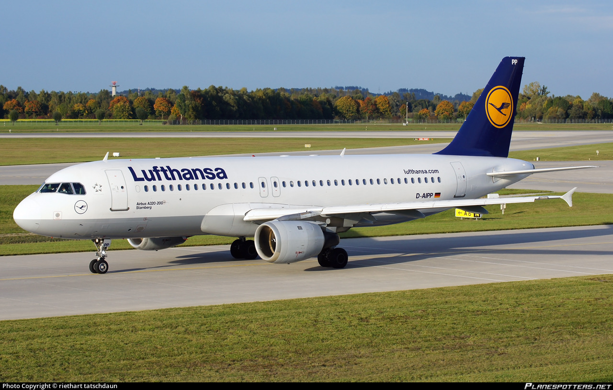

Wizz Air received the first Airbus A320neo. Source: Economica.net
16 July 2020
Wizz Air received its first new Airbus A320neo aircraft with the code HA-LJA. This is the 122nd Wizz Air aircraft in its fleet consisting exclusively of Airbus aircraft.
Of the low-cost airlines with at least 100 aircraft, Wizz Air operates the youngest fleet, with an average aircraft age of 5.43 years.
Wizz Air has the largest order of 268 aircraft in the state-of-the-art Airbus A320neo family.
Production of the A320 began in 1988. Since then, some airlines have withdrawn their older aircraft, others have retained them for a number of reasons
(financial, reliability, etc.). But at the moment what are the oldest A320s in operation? Let's find out.
The oldest A320 still flying
The oldest aircraft is the JY-JAC, an Airbus A320-211, owned by Jordan Aviation. He made his first flight in 1989, so he is now 31 years old.
He originally flew with Ansett Australia, after which he joined the Jordan Aviation fleet, where he is now.
The following 2
The next 2 aircraft in our ranking fly for the same company, Coredon Airlines. The first is ZS-GAR, which is also 31 years old and in 2018 flew with Sunrise Airways.
The 2nd plane is also an A320-231, ZS-GAW. From our information, it flew for a long time with Coredon Airlines. And he is also 31 years old.
Lufthansa is next in the rankings

Lufthansa also has fairly old aircraft. D-AIPP is an A320-211 and is 30 years old. Most likely the aircraft will be withdrawn because Lufthansa has major financial problems due to Covid-19.
Many old A320 aircraft are continuously withdrawn and stored in Teruel, Spain. With only a few days younger than D-AIPP, D-AIPR and D-AIPS are withdrawn to Schonefeld.
Delta Air Lines and heritage
Delta Air Lines has many old Airbus A320-211 aircraft, inherited through the purchase of Northwest Airlines.
The oldest A320 in the Delta fleet is the N309US, which is 30 years old. This aircraft is currently stored at California's San Bernadino Airport and could retire.
Another 30-year-old aircraft, N312US, is currently being stored at Kansas City Airport.
Air Canada and the crowd
Air Canada has 4 A320-211, (C-FDSN, C-FDST, C-FDSU, C-FFWI) all arrived in late 1990. All aircraft are stored.